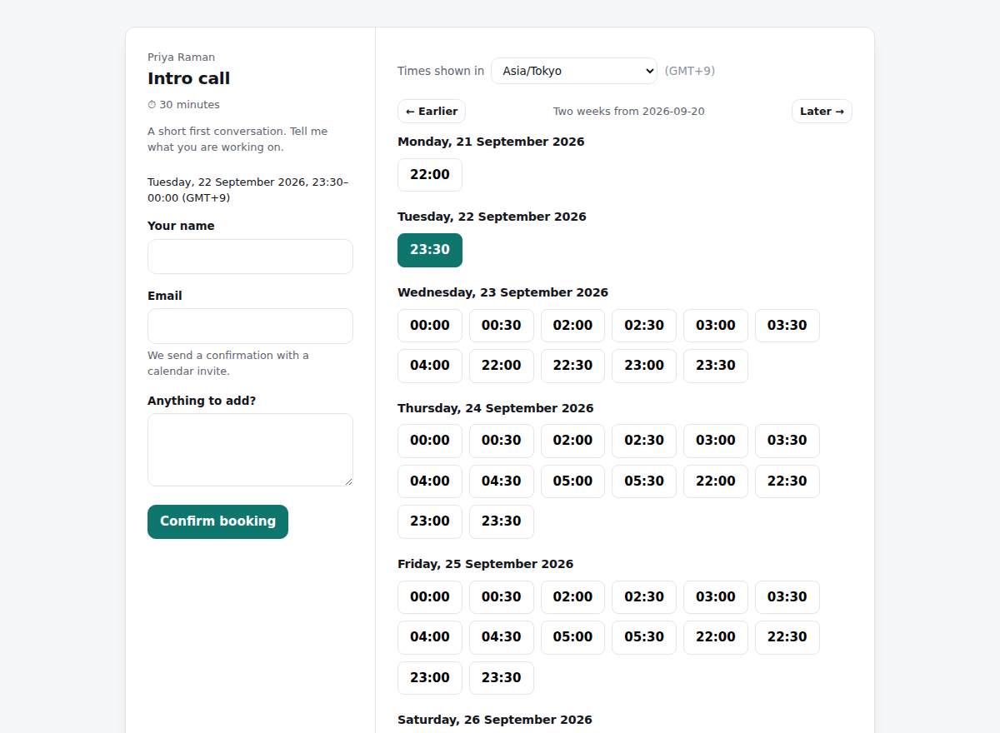

Availability and booking pages
Share your availability. Let people book it.
Publish your weekly hours once, in your own timezone. Visitors see them in theirs and pick a slot. Confirmations go out with a real calendar invite attached.

The hard part
What time is “Tuesday at 09:00”, and who gets the slot when two people click at once?
Two problems, and they are the reason this is more interesting than its CRUD surface suggests.
1. Timezones are not an offset
An instant is stored in UTC; a rule is wall-clock time plus an IANA zone. “Tuesdays 09:00–17:00” is not a fixed span of UTC — in New York it is 13:00–21:00Z for half the year and 14:00–22:00Z for the other half. So the conversion happens per day, through the zone, never once with a cached offset.
2. The round-trip check most implementations skip
On 8 March 2026 New York goes straight from 01:59 to 03:00. There is no 02:30. A naive converter quietly returns 01:30 or 03:30 and offers a meeting at a time that never happens. Slotline converts, formats back, compares — and if they disagree, the slot is not offered. Going the other way, 01:30 on 1 November happens twice, and resolves to the first occurrence rather than two bookable slots an hour apart both claiming to be 01:30.
3. Double booking is settled by the database
“Check then insert” is a read-then-write race: two requests milliseconds apart both read free and both insert. No amount of application checking closes it. So the guarantee lives in the schema — Postgres refuses to store the overlap:
EXCLUDE USING gist (
host_id WITH =,
tstzrange(starts_at, ends_at) WITH &&
) WHERE (status = 'confirmed')It is an overlap check, not equality, so a 60-minute booking blocks the 30-minute slot starting halfway through it. Ranges are half-open, so back-to-back bookings are fine. And scoping it to confirmed rows means cancelling genuinely frees the slot. The test fires ten concurrent bookings at one slot; exactly one survives.
A smaller one: the calendar invite
.ics is hand-written — CRLF line endings, folding at 75 octets without splitting a multi-byte character, and a stable UID with an incrementing SEQUENCE so cancelling removes the meeting instead of adding a second contradictory one.
Running it
It is a server application — Postgres, sessions, and an exclusion constraint doing the real work. This page is a static showcase; the app itself needs somewhere to run. One command does it:
git clone https://github.com/0211IkeVenLouie/slotline
cd slotline
docker compose upThat brings up Postgres, runs the migrations and seeds a demo with real data in it, so there is something to look at the moment it boots.
See it for yourself
- Open a booking page with your system clock set to Tokyo. A New York host’s 9–5 appears as late-night slots — on a different date.
- Note the gap where the host’s lunch break is, correctly translated.
- Submit the same slot from two browsers at once. One books; the other is told someone just took it, with the form still filled in.